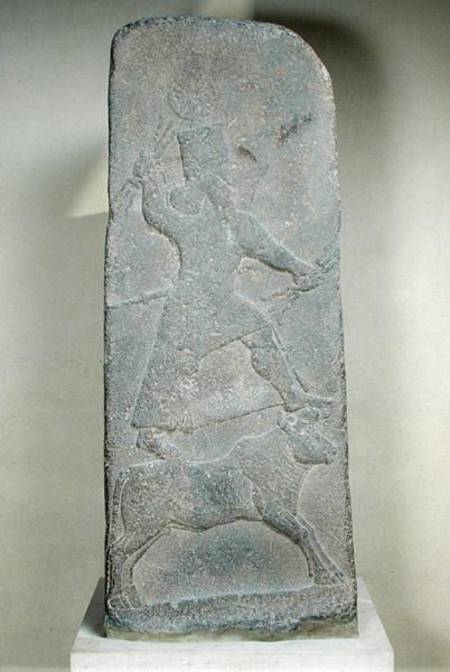

| 讀 | 默想 |
|---|---|
| 1 百姓見摩西遲延不下山，就大家聚集到亞倫那裡，對他說：「起來！為我們做神像，可以在我們前面引路；因為領我們出埃及地的那個摩西，我們不知道他遭了甚麼事。」  上圖：主前8世紀亞述的風暴之神Hadad（巴力的別名）石雕，出土於敘利亞北部的Arslan-Tash，現藏于盧浮宮。石雕中的巴力手持閃電，站在一隻公牛上。 |
摩西「在山上四十晝夜」（二十四18），百姓就等不住了。人的喜歡跟隨「看得見的神」，看不到「摩西」，他們就要為自己做看得見、摸得著的「神像」。 「起來」、「做」原文動詞都是命令式 ，表明百姓並不是來與亞倫商量，而是直接要求他根據百姓的決定採取行動。摩西根據葉忒羅的建議所揀選的「有才能的人，就是敬畏神、誠實無妄、恨不義之財的人」，按照「千夫長、百夫長、五十夫長、十夫長」（十八21）的組織管理層次充分商議之後，最後的決定竟然是「為我們做神像」。人實在是「肉體之中，沒有良善」（羅七18）。 「神像」原文是複數的「神」，動詞「引路」原文也是複數，表明百姓的心思還是擺脫不了埃及「眾神」的觀念。我們在難處面前，也常常在口裡承認獨一真神的時候，心裡還是倚靠人、勢力、物質等「眾神」。我們實在需要用一生去學習徹底擺脫偶像。 「領我們出埃及地的那個摩西」原文語氣很粗俗，百姓心中認定領自己「出埃及地」的是看得見的摩西，而不是那位看不見的神，所以「摩西遲延不下山」，他們也就認為神不見了。我們也常常習慣性地認定看得見的屬靈領袖，離開了教會、團契、小組的帶領者，我們就無所適從，忘了真正帶領我們的是神，始終與我們同在的是基督。 |
| 2 亞倫對他們說：「你們去摘下你們妻子、兒女耳上的金環，拿來給我。」 3 百姓就都摘下他們耳上的金環，拿來給亞倫。 4 亞倫從他們手裡接過來，鑄了一隻牛犢，用雕刻的器具做成。他們就說：「以色列啊，這是領你出埃及地的 神。」 | 亞倫沒有求告神，而是順從人意。離開聖靈的管理，所以神提醒我們「不可隨眾行惡」（二十三2）。 「金環」是神施恩讓以色列人從埃及人那裡索要來的（十二36），應該用來建造會幕，現在卻被拿來製造偶像。 神賜給我們的恩賜，若不給神使用，結果是被撒但使用。 百姓說：「這是領你出埃及地的神」，原文是「這些是領你出埃及地的眾神」，代詞「這」、動詞「出」和名詞「神」都是複數。就像迦南人敬拜巴力一樣，把這只公牛當作「眾神」的坐騎，用公牛來代替「眾神」。 |
| 5 亞倫看見，就在牛犢面前築壇，且宣告說：「明日要向耶和華守節。」 6 次日清早，百姓起來獻燔祭和平安祭，就坐下吃喝，起來玩耍。 上圖：以色列出土的主前12世紀公牛小像，現存於以色列博物館。這公牛像證明士師時代的以色列人繼續效法迦南人拜偶像，用公牛來代表神。 |
亞倫「在牛犢面前築壇」（5節），並且宣告「明日要向耶和華守節」，表明他並不認為自己是在「祭祀別神」（出二十二20），而是以為自己在「向耶和華守節」。今天許多人自稱信神，但所敬拜的其實是心中的「金牛犢」，只是一個符合自己想像的偶像，並非聖經裡自我啟示的獨一真神。十誡禁止人製造、敬拜偶像（二十4-6），不但不可以製造、敬拜代表假神的偶像，也不可以製造、敬拜代表真神的偶像。 百姓表面上是在「向耶和華守節」（5節），實際上已經違反了十誡；被撒但擄去了，卻還不知道。 「坐下吃喝，起來玩耍」，可能指模仿迦南崇拜中的各種淫亂行為。人若偏離神，結果是「坐下吃喝，起來玩耍」，生活行為與外邦人無異。 |
| 7 耶和華吩咐摩西說：「下去吧，因為你的百姓，就是你從埃及地領出來的，已經敗壞了。 8 他們快快偏離了我所吩咐的道，為自己鑄了一隻牛犢，向它下拜獻祭，說：『以色列啊，這就是領你出埃及地的神。』」 |
神原來一直把以色列人稱為「我的百姓」（三7、10），現在卻稱他們為「你的百姓」；神原來宣告「我是耶和華——他們的神，是將他們從埃及地領出來的」（二十九46），現在卻稱他們為「你從埃及地領出來的」。 金牛犢事件正好發生在神啟示完「山上的樣式」的時候，可以看出這場屬靈爭戰的真相：神百姓的失敗，既是因為人本相的暴露，也是由於撒但的打岔，但更有神超越一切的美意。神借著這「四十晝夜」的試驗，顯明人肉體的「敗壞」，然後神藉著摩西的代禱，給他們指明出路，啟示神計畫如何將完全「敗壞」的人從死亡中救贖出來。 |
| 9 耶和華對摩西說：「我看這百姓真是硬著頸項的百姓。 10 你且由著我，我要向他們發烈怒，將他們滅絕，使你的後裔成為大國。」 |
32:9「硬著頸項」：形容不肯讓人牽引的牛馬，表示「頑梗」。這是聖經中第一次用此比喻形容以色列人。句的直譯是：「我看這百姓，看哪，他是硬著頸項的百姓」。 32:10「你且由著我」：原文意思是「現在，不要插手干預我」。這句話暗示上帝知道摩西會出面為以色列人代求，祂要借著應允摩西的代禱，啟示祂真正的救贖計畫。 |
| 11 摩西便懇求耶和華─他的 神說
：「耶和華啊，你為甚麼向你的百姓發烈怒呢？這百姓是你用大力和大能的手從埃及地領出來的。 12 為甚麼使埃及人議論說『他領他們出去，是要降禍與他們，把他們殺在山中，將他們從地上除滅』？求你轉意，不發你的烈怒，後悔，不降禍與你的百姓。 13 求你記念你的僕人亞伯拉罕、以撒、以色列。你曾指著自己起誓說：『我必使你們的後裔像天上的星那樣多，並且我所應許的這全地，必給你們的後裔，他們要永遠承受為業。』」 14 於是耶和華後悔，不把所說的禍降與他的百姓。 |
摩西的代禱不是站在人的地位上去看事情，而是站在神的地位上來看事情，所以摸著了神的心意，清楚地把神救贖的心意表明了出來。這個代禱說出了「中保」（來七22）工作的實際，讓神心滿意足： 摩西的代禱是根據神的揀選：他不但強調以色列人是「禰的百姓」，也強調他們是「禰用大力和大能的手從埃及地領出來的」。 摩西的代禱是根據神的聖名：他求神赦免百姓，並不是以人為中心，而是為了榮耀神的名（12節）。 摩西的代禱是根據神的應許：他相信神之所以會赦免百姓，是因為祂應許的信實（13節），並不是因為人的苦苦哀求。 摩西的代禱不根據人的光景：他完全不看以色列人的實際光景如何，也不考慮他們或赦免後是否會悔改，因為他知道神所開始的工作，神必然會負責完成。 |
| 禱告：親愛的天父上帝，我感謝祢，以色列百姓雖然落入在肉體的情慾，偶像的崇拜的大罪裡。但是祢仍然藉著摩西的代禱。赦免了百姓的過犯。親愛的主耶穌，現今的世代邪惡！在我的生活中，也有許多事情影響我。使我的思想和意念，甚至行為上，做了想了祢不喜悅的事。求祢使我回轉、悔改，靠著耶穌基督的寶血的救贖。能夠勝過罪惡。 主阿！我也來到祢的面前，為我的國家禱告。我們的國家社會現在面對新冠疫情非常嚴重。使我們的生活。有很大的不安、不方便。各地有許多的動盪、許多的困苦。主阿！我懇求祢。在我們的國家掌權。使我們在上掌權的、執政的，能夠做正確的決定。藉著這個時候百姓的心，在徬徨無助，甚至絕望的時刻。求祢開啟這地百姓的心能夠向祢敞開，認識祢是創造宇宙萬物的主宰，也是拯救我們唯一真實的盼望。我也為我身邊的OOO、OOO代禱，懇求祢開啟他們願意認識祢的心，能夠明白救贖的恩典，能夠信靠祢，得著永恆的盼望與喜樂。奉耶穌基督的名禱告，阿們。 | |